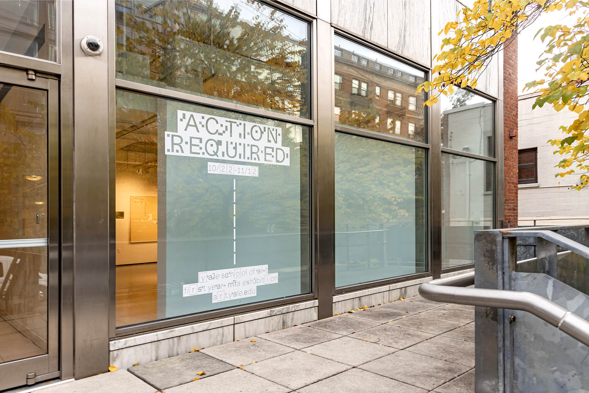
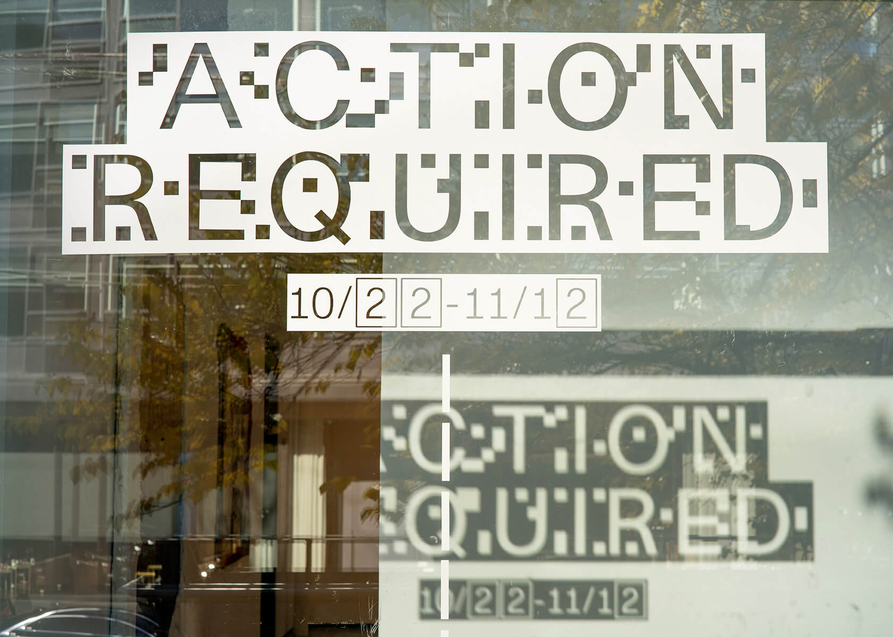
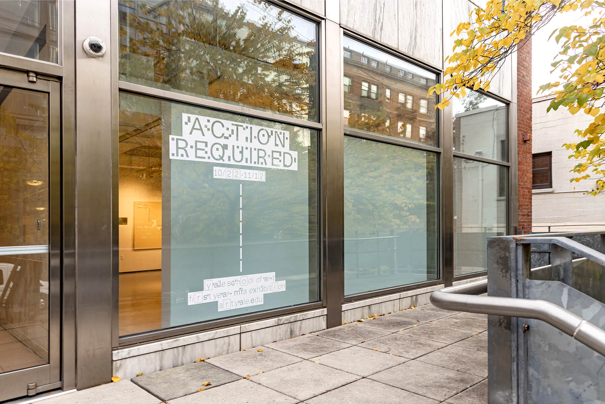
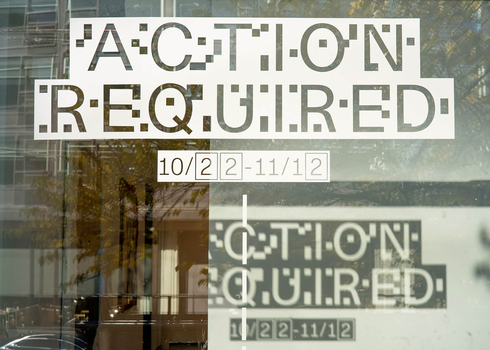

INDEX OF PROJECTS
Prev
Next
Green Revolution Cookbook
Designed with M.C. Madrigal
Edited by Professor Anthony Acciavatti
2023
 



Prev
Next
Action Required
Designed with Junyi Shi
2021
Prev
Next